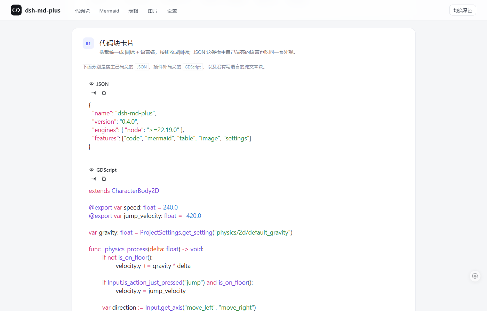
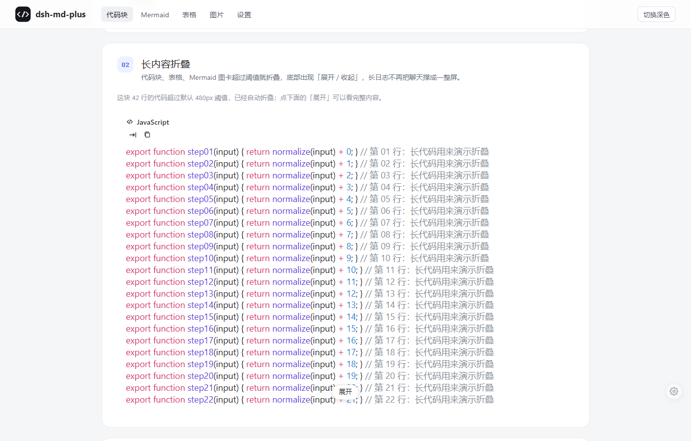
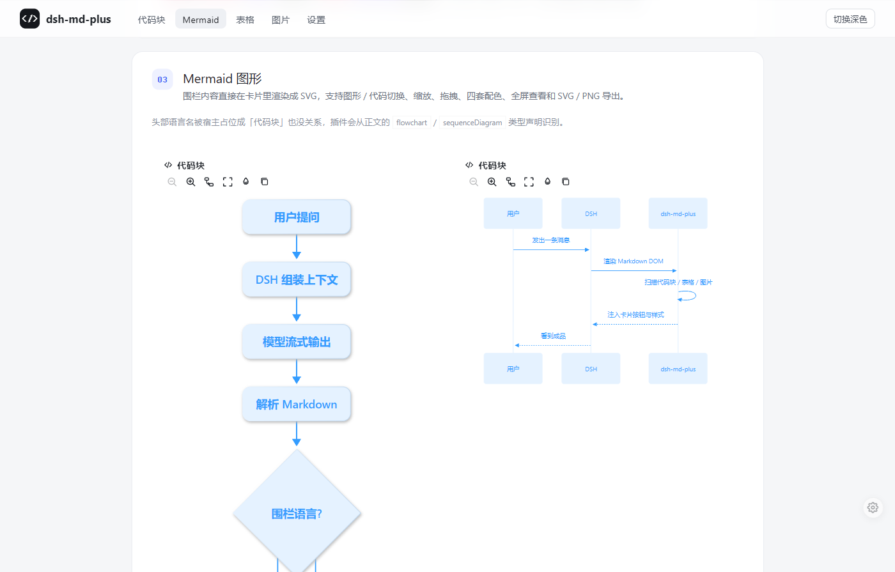
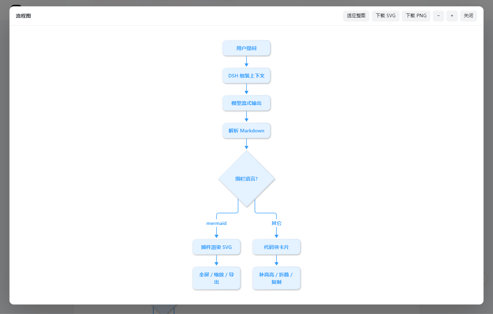
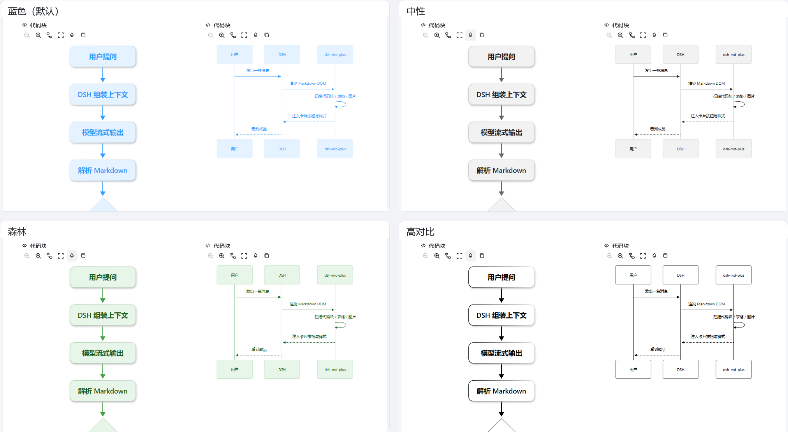
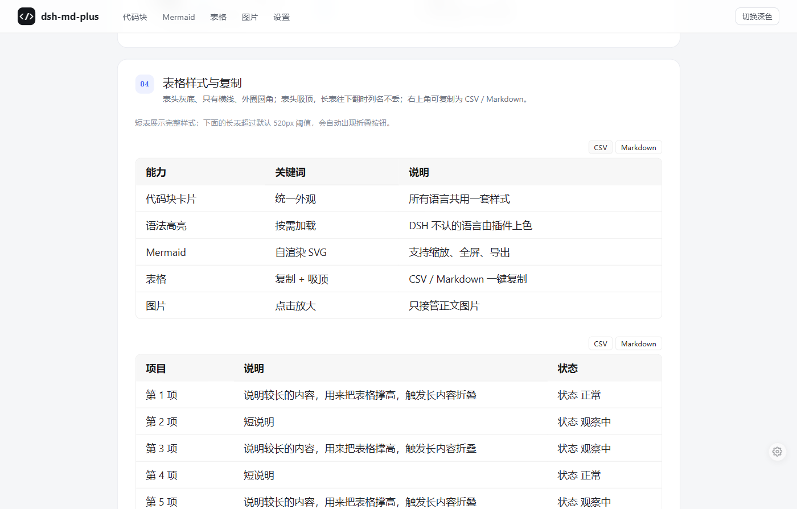
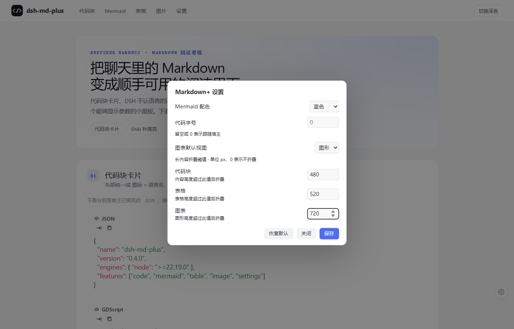
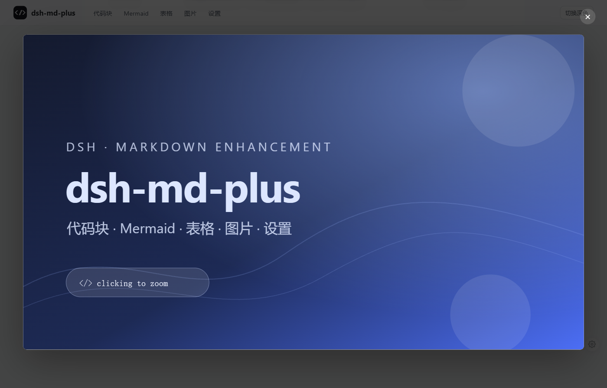

这里放的是插件在聊天区里的实际效果截图。下面按功能分了几块，点开大图能看得更清楚。
插件只改 Markdown 的显示层，不改变解析结果。
| 能力 | 说明 |
|---|---|
| 代码块卡片 | 统一卡片外观，头部显示 </> 图标与语言名；无语言显示「纯文本」；按钮收成图标。 |
| 语法高亮 | DSH 自带语言继续由宿主上色；DSH 不认识的语言由插件用 Shiki 补高亮。 |
| Mermaid | 围栏渲染成 SVG，支持图形 / 代码切换、缩放、拖拽、双击适应、全屏、四套配色和 SVG / PNG 导出。 |
| 表格 | 灰底表头、横向分隔线、外圈圆角、悬停高亮；表头吸顶；每张表可复制为 CSV 或 Markdown。 |
| 图片放大 | 旧宿主没有原生预览按钮时兜底：点击打开暗色预览，Esc 或点遮罩关闭；新版 DSH 原生预览、头像、图标、代码块和链接图片不接管。 |
| 长内容折叠 | 代码块、表格、Mermaid 图卡超过阈值自动折叠，底部出现「展开 / 收起」。 |
| 设置面板 | 右下角齿轮调整 Mermaid 配色、代码字号、图表默认视图和三类折叠阈值，设置存 localStorage。 |
JSON 是 DSH 自己高亮的语言；GDScript 是 DSH 不认、由插件补色的语言。头部按钮统一收成图标，无语言时显示「纯文本」。

42 行 JavaScript 超过默认 480px 阈值后自动折叠，底部出现「展开」按钮，长日志不再撑满聊天。

围栏内容渲染成 SVG；头部提供缩放、图形 / 代码切换、全屏和配色按钮。全屏工具栏支持适应整图、缩放和下载 SVG / PNG。


头部调色按钮循环切换蓝色、中性、森林和高对比，已渲染的图会即时重画，选择记在本地。

表头灰底、只有横线、外圈圆角；表头吸顶；右上角「CSV / Markdown」一键复制，长表超过阈值自动折叠。

右下角齿轮打开设置：Mermaid 配色、代码字号、图表默认视图、代码块 / 表格 / 图表的折叠阈值；保存后写入 localStorage，刷新保持。

旧宿主没有原生预览按钮时由插件兜底：点击打开暗色预览，Esc 或点遮罩关闭；新版 DSH 原生预览、头像、图标、代码块和链接图片都不接管。

截图由 scripts/showcase.mjs 生成的演示页在 Chrome 中真实运行插件后截取；示例内容为中性模板。